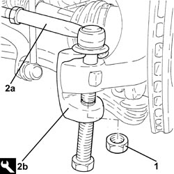
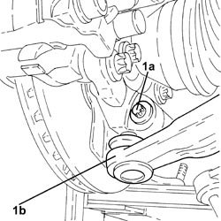
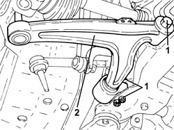
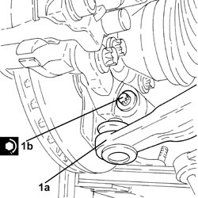

4410B40 LOWER TRACK CONTROL ARM (WITH BALLJOINT) FOR LEFT OR RIGHT FRONT SUSPENSION (ONE) - R+R - CHECK WHEEL GEOMETRY SEPARATELY
- Path
- Procedures > 44 SUSPENSION AND WHEELS > 4410 FRONT SUSPENSION > 4410B FRONT SUSPENSION TRACK CONTROL ARMS > 4410B40 LOWER TRACK CONTROL ARM (WITH BALLJOINT) FOR LEFT OR RIGHT FRONT SUSPENSION (ONE) - R+R - CHECK WHEEL GEOMETRY SEPARATELY
- Kind
- repair procedure (removal / refitting; the operation number is the code)
- Applies to
- all engines; all production periods
- Interactive page
- https://sloeber94.github.io/elrnDB-fCrm/en/#/194000541
Applies to: all engines; all production periods
 Removing
Removing
 Refitting
Refitting- Position the vehicle on a lift.
Op. 4450B04 RIGHT FRONT WHEEL - R.R
1. Undo the nut fixing the steering rod to the right front steering knuckle.
2. Disconnect the steering rod (2a) from the right front steering knuckle using the tool (2b).
Tool | Description | Function | Validity |
|---|---|---|---|
1871000700 | Extractor | Extracting steering rod from steering knuckle |

Applies to: all engines; all production periods
1. Undo the bolt (1a) and disconnect the lower track control arm for the front suspension (1b) from the steering knuckle pulling it downwards.

Applies to: all engines; all production periods
1. Undo the bolts fixing the lower track control arm to the front suspension frame.
2. Remove the front suspension track control arm.

Applies to: all engines; all production periods
Refitting
Removing- Place the front suspension track control arm in its housing and secure it to the front suspension frame without tightening the bolts to torque.
1. Connect the front suspension lower track control arm (1a) to the steering knuckle and secure it tightening a new bolt (1b) to the recommended torque.
Component | Fastening | dia | Value (daNm) | Validity |
|---|---|---|---|---|
Front suspension lower track control arm | Bolt (to be replaced) | M10 | (steering knuckle side) 2.7 - 3.3 + 60° |

Applies to: all engines; all production periods
- Connect the steering rod to the right front steering knuckle and secure it tightening a new nut to the recommended torque.
Component | Fastening | dia | Value (daNm) | Validity |
|---|---|---|---|---|
Steering rods | Nut | M12 | (steering knuckle side) 3.0 - 4.0 |
- Lower the vehicle on the lift until the wheels are resting on the ground.
- Place the front suspension in design conditions
Op. 4450A10 FRONT WHEEL GEOMETRY - CHECK USING OPTICAL EQUIPMENT - INCLUDES ADJUSTMENT IF NECESSARY
- Tighten the new bolts fixing the lower wishbone to the front suspension frame to the specified torque.
Component | Fastening | dia | Value (daNm) | Validity |
|---|---|---|---|---|
Front suspension lower track control arm | Bolt (to be replaced) | M12 | (chassis side) 8.1 - 9.9 + 75° |
Op. 4450B04 RIGHT FRONT WHEEL - R.R
- Remove the vehicle from the lift.
Topics linked from this page (2)
- 4450A10 FRONT WHEEL GEOMETRY - CHECK USING OPTICAL EQUIPMENT - INCLUDES ADJUSTMENT IF NECESSARY
- 4450B04 RIGHT FRONT WHEEL - R.R